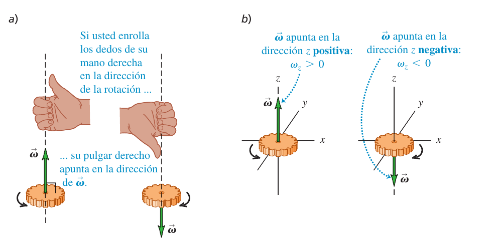

Rotación de cuerpos rígidos
Hasta ahora has tratado los cuerpos como puntos. Aquí un cuerpo gira: aprenderás a describir ese giro con ángulos, velocidad y aceleración angulares (la cinemática es casi un calco del movimiento rectilíneo), a ligarlo con lo que le pasa a cada punto del cuerpo, y a calcular su energía de rotación con una nueva cantidad: el momento de inercia, que hace en la rotación el papel de la masa.
El tema en 5 minutos P
Una sola idea: un cuerpo rígido que gira alrededor de un eje fijo se describe con un solo número, el ángulo $\theta$, igual que un coche en una carretera se describe con $x$. Todos sus puntos comparten $\theta$, $\omega$ y $\alpha$; lo que cambia de un punto a otro es la distancia al eje $r$, y con ella su rapidez $v=r\omega$. La cinemática es un calco del movimiento rectilíneo ($x\to\theta$, $v\to\omega$, $a\to\alpha$), y la energía de giro es $K=\tfrac12I\omega^2$, donde el momento de inercia $I=\sum mr^2$ hace el papel de la masa: no cuenta solo cuánta masa hay, sino a qué distancia del eje está.
Necesitas: las cuatro ecuaciones del MRUA (T2), el movimiento circular y $a_{rad}=v^2/r$ (T3), derivar polinomios, la conservación de la energía (T6-T7) y el centro de masa (T8). Este tema es la base del tema 10 (dinámica de rotación): allí se usan sin explicar $I$, la tabla 9.2, los ejes paralelos y $v=R\omega$. Si el enunciado no da $g$, usa $9{,}8\ \text{m/s}^2$.
El método en 4 pasos (úsalo siempre, en este orden)
Es la «Estrategia para resolver problemas 9.1» del libro, precedida de la cinemática de §9.1-9.3. U p.274-286
Las 6 fórmulas que hay que saber
| Fórmula | Cuándo se usa |
|---|---|
| $\omega_z=\dfrac{d\theta}{dt}$, $\ \alpha_z=\dfrac{d\omega_z}{dt}$ | Te dan $\theta(t)$ como función: «velocidad angular máxima», «en qué instante se para». |
| $\omega_z=\omega_{0z}+\alpha_zt$, $\ \theta-\theta_0=\omega_{0z}t+\tfrac12\alpha_zt^2$, $\ \omega_z^2=\omega_{0z}^2+2\alpha_z\Delta\theta$ | «Aceleración angular constante», «parte del reposo», «cuántas vueltas da». |
| $v=r\omega$, $\ a_{tan}=r\alpha$, $\ a_{rad}=\omega^2r$ | «Punto del borde», «aceleración tangencial/radial/total», cable que no resbala. |
| $I=\sum m_ir_i^2$ y tabla 9.2 | «Momento de inercia» de masas puntuales, varillas, discos, aros, esferas o piezas compuestas. |
| $K=\tfrac12I\omega^2$, $\ mgh=\tfrac12mv^2+\tfrac12I\omega^2$ | «Energía de rotación», «bloque que cuelga de una polea», «¿qué rueda baja más rápido?». |
| $I_P=I_{cm}+Md^2$, $\ I=\int r^2\,dm$ | Eje que no es el de la tabla; cuerpo continuo o de densidad variable. |
Qué cae en examen
Seamos honestos: en los exámenes revisados no ha caído ningún problema de 3 puntos de este tema por sí solo. Lo que sí ha caído es una pregunta con dos cuestiones cortas (X1): por qué ruedas optar en un carro que baja una pendiente y qué aceleraciones tiene un punto de un volante con $\omega$ constante; acompañaban a la teoría «Trabajo y potencia en un movimiento de rotación», que es del tema 10. X Pero no te confíes: todos los problemas de rotación del tema 10 (yoyó, cilindros que ruedan por una rampa, barra giratoria, varilla con pivote) necesitan el momento de inercia, la tabla 9.2, los ejes paralelos y $v=R\omega$ de este tema. X ×5
Elige tu ruta
Esta página + lo marcado 🔴 imprescindible (secciones 1-5) + ejercicios del bloque «Núcleo».
Todo lo anterior + 🟡 conveniente (cálculo de $I$ por integración) + bloque «Práctica» + el guion de teoría.
Chuleta, errores frecuentes, lista de comprobación y X1 sin mirar la solución.
¿?¿Qué tipo de problema es? 🔴 P
Lee el enunciado, busca la pista en la primera columna y ve directo al método y al ejercicio modelo.
| Si el enunciado dice… | Haz esto | Ejercicio modelo |
|---|---|---|
| «aceleración angular constante», «parte del reposo», «¿cuántas revoluciones?» | Tabla 9.1: elige la ecuación que tiene tu incógnita y no la que no conoces; pasa rad a rev al final. | E1 |
| «$\omega_z$ pasa de negativa a positiva», «¿se acelera o frena?», gráfica $\omega_z$–$t$ | Compara los signos de $\omega_z$ y $\alpha_z$; parada en $\omega_z=0$; ángulo = área con signo bajo $\omega_z(t)$. | E2 |
| «$\theta(t)=\gamma t^2-\beta t^3$», «velocidad angular máxima» | Deriva: $\omega_z=\dot\theta$, $\alpha_z=\dot\omega_z$; el máximo de $\omega_z$ está donde $\alpha_z=0$. | E3 |
| «punto del borde», «aceleración tangencial, radial y total», «después de girar 60°» | $a_{tan}=r\alpha$, $a_{rad}=\omega^2r$ (con $\omega^2$ de la ec. 9.12), Pitágoras. | E5, X1 (b) |
| «a 5000 rpm», «aceleración de $3000g$» | rpm $\times2\pi/60$; $a_{rad}=\omega^2r$; compara el diámetro con el espacio. | E4 |
| «masas pequeñas sujetas a una varilla», «barra con esferas», «respecto a otro eje» | $I=\sum mr^2$ (distancia perpendicular al eje) + tabla 9.2 + $I_{cm}+Md^2$; todo respecto al mismo eje. | E6, E7, E8 |
| «densidad variable», «calcule por integración», «eje a una distancia $h$ del extremo» | $dm=\lambda(x)\,dx$, $M=\int dm$, $I=\int r^2\,dm$ con $r$ medida desde el eje. | E9, E11 |
| «cuelga de un cable enrollado», «polea», «cae una altura $h$» | Energía $mgh=\tfrac12mv^2+\tfrac12I\omega^2$ con $\omega=v/R$. | E10 |
| «¿qué ruedas?», «sólidas o con radios», «¿cuál baja más rápido?» | $K=\tfrac12(M+\sum c\,m)v^2$ con $I=c\,mr^2$: gana el menor $c\,m$; el radio se simplifica. | X1 (a) |
| «Desarrolle el tema…» (cinemática de rotación, momento de inercia) | Guion: idea → definición y ecuación → deducción breve → ejemplo con números → error típico. | Guion |
1Ángulo, velocidad y aceleración angulares 🔴 U p.274
🎯 Antes de leer: si una rueda da una vuelta completa, ¿cuántos radianes ha girado? ¿Y a cuántos grados equivale, más o menos, un radián? (Piénsalo 20 s; la respuesta está en esta sección.)
Un cuerpo rígido no se deforma: sus partes mantienen las distancias entre sí. Si gira alrededor de un eje fijo (la aguja de un velocímetro, la rueda de una bici), basta un número para decir dónde está: el ángulo $\theta$ que forma una recta del cuerpo con una referencia. Ese ángulo se mide en radianes, la razón entre el arco $s$ y el radio $r$:
$$\theta=\frac sr\qquad\Longleftrightarrow\qquad s=r\theta\qquad\text{(ec. 9.1)}$$Es un número puro. Una vuelta son $2\pi$ rad, así que $1\ \text{rad}=57{,}3^\circ$, $1\ \text{rev/s}=2\pi$ rad/s y $1\ \text{rpm}=2\pi/60$ rad/s. El ángulo positivo se mide en sentido antihorario. Ejemplo mínimo. Un arco de $60^\circ=\pi/3$ rad en una rueda de radio $r$ mide $s=(\pi/3)\,r\approx1{,}05\,r$. Error típico: escribir $s=60\,r$. En cuanto una fórmula mezcla lo lineal con lo angular ($s=r\theta$, $v=r\omega$, $a_{tan}=r\alpha$, $K=\tfrac12I\omega^2$), los ángulos van en radianes: convierte «60°» o «rpm» antes de operar.
U p.274, 281
Igual que la velocidad dice cuántos metros recorre algo por segundo, la velocidad angular dice cuántos radianes gira; la aceleración angular, cuánto cambia esa velocidad angular por segundo. Y lo bonito: todos los puntos del cuerpo comparten $\theta$, $\omega_z$ y $\alpha_z$.
$$\omega_{med\text{-}z}=\frac{\Delta\theta}{\Delta t}\ (9.2)\qquad\omega_z=\frac{d\theta}{dt}\ (9.3)\qquad\alpha_z=\frac{d\omega_z}{dt}=\frac{d^2\theta}{dt^2}\ (9.5,\ 9.6)$$Unidades: rad/s y rad/s². $\omega_z\gt0$ es giro antihorario y $\omega_z\lt0$, horario; la rapidez angular $\omega=|\omega_z|$ nunca es negativa. Ejemplo mínimo (ejemplos 9.1 y 9.2). Un volante gira con $\theta=(2{,}0\ \text{rad/s}^3)\,t^3$. Entre 2,0 s y 5,0 s gira de 16 a 250 rad: $\omega_{med}=(250-16)/3=78$ rad/s (pendiente de la cuerda). Derivando, $\omega_z=6t^2$ da 24 y 150 rad/s, y $\alpha_z=12t$ da 24 y 60 rad/s² en esos instantes. Error típico: creer que «$\alpha_z\gt0$» significa «gira cada vez más deprisa». La rotación se acelera si $\omega_z$ y $\alpha_z$ tienen el mismo signo y frena si tienen signos opuestos.
U p.275-277Para describir el giro de todo el cuerpo con un vector, $\vec\omega$ se pone sobre el eje de rotación: curva los dedos de la mano derecha en el sentido del giro y el pulgar marca el sentido de $\vec\omega$. Con el eje $z$, $\omega_z\gt0$ si $\vec\omega$ apunta a $+z$. La aceleración angular $\vec\alpha=d\vec\omega/dt$ está también sobre el eje: paralela a $\vec\omega$ si el giro se acelera y antiparalela si frena (la regla de los signos, vista con vectores). En este capítulo el eje no cambia y basta con $\omega_z$ y $\alpha_z$. Error típico: imaginar $\vec\omega$ como una flecha curva que da vueltas o que apunta hacia donde se mueve una parte del cuerpo: es perpendicular al plano de giro. Y $\omega_z$ no significa que el cuerpo avance por el eje $z$; solo gira alrededor de él.
U p.276-278
✍️ Comprueba que lo has entendido (2 min)
- Pasa 45 rpm a rad/s y 150° a radianes.
Ver respuesta
$45\cdot2\pi/60=4{,}71$ rad/s; $150\cdot\pi/180=2{,}62$ rad. - Un disco gira con $\theta=(5{,}0\ \text{rad/s})\,t-(0{,}50\ \text{rad/s}^3)\,t^3$. En $t=1{,}0$ s, ¿se acelera o frena?
Ver respuesta
$\omega_z=5{,}0-1{,}5t^2=3{,}5$ rad/s y $\alpha_z=-3{,}0t=-3{,}0$ rad/s²: signos opuestos, frena. - Una rueda tiene $\omega_z=-4{,}0$ rad/s y $\alpha_z=+2{,}0$ rad/s² constante. ¿Se acelera? ¿Cuándo se para?
Ver respuesta
Signos opuestos: frena (aunque $\alpha_z\gt0$). Se para cuando $\omega_z=-4{,}0+2{,}0\,t=0$, en $t=2{,}0$ s; después gira en sentido antihorario cada vez más deprisa (método de E2).
2Rotación con aceleración angular constante 🔴 U p.278
🎯 Antes de leer: en el movimiento rectilíneo con aceleración constante tienes $v=v_0+at$. ¿Cuál crees que es su ecuación «gemela» para un giro? (Piénsalo 20 s; la respuesta está en esta sección.)
Si ya sabes el movimiento rectilíneo con aceleración constante, ya sabes esto: cambia $x\to\theta$, $v_x\to\omega_z$ y $a_x\to\alpha_z$.
| Movimiento rectilíneo ($a_x$ cte.) | Rotación ($\alpha_z$ cte.) | No contiene |
|---|---|---|
| $v_x=v_{0x}+a_xt$ (2.8) | $\omega_z=\omega_{0z}+\alpha_zt$ (9.7) | $\theta$ |
| $x-x_0=\tfrac12(v_{0x}+v_x)t$ (2.14) | $\theta-\theta_0=\tfrac12(\omega_{0z}+\omega_z)t$ (9.10) | $\alpha_z$ |
| $x=x_0+v_{0x}t+\tfrac12a_xt^2$ (2.12) | $\theta=\theta_0+\omega_{0z}t+\tfrac12\alpha_zt^2$ (9.11) | $\omega_z$ |
| $v_x^2=v_{0x}^2+2a_x(x-x_0)$ (2.13) | $\omega_z^2=\omega_{0z}^2+2\alpha_z(\theta-\theta_0)$ (9.12) | $t$ |
Elige la ecuación que tiene tu incógnita y no la letra que no conoces. Ejemplo mínimo (ejemplo 9.3). Un disco de Blu-ray gira a $\omega_{0z}=27{,}5$ rad/s y frena con $\alpha_z=-10{,}0$ rad/s². En 0,300 s: $\omega_z=27{,}5-10{,}0(0{,}300)=24{,}5$ rad/s y $\theta=27{,}5(0{,}300)-\tfrac12(10{,}0)(0{,}300)^2=7{,}80$ rad $=1{,}24$ rev, es decir, una vuelta y $0{,}24\cdot360^\circ\approx87^\circ$ más. Comprobación sin $t$ (9.12): $(24{,}5^2-27{,}5^2)/(2\cdot(-10{,}0))=7{,}80$ rad. Error típico: usar estas ecuaciones cuando $\alpha_z$ no es constante (si te dan $\theta(t)$ con un $t^3$, deriva).
U p.278-280✍️ Comprueba que lo has entendido (2 min)
- Una rueda pasa del reposo a 20 rad/s en 5,0 s con $\alpha$ constante. ¿$\alpha$? ¿Cuántas vueltas da?
Ver respuesta
$\alpha=20/5{,}0=4{,}0$ rad/s²; $\theta=\tfrac12(0+20)(5{,}0)=50$ rad $=50/2\pi=7{,}96$ rev. - Un ventilador a 30 rad/s se frena uniformemente y se para tras girar 45 rad. ¿$\alpha_z$? ¿Cuánto tarda?
Ver respuesta
Sin $t$ (9.12): $0=30^2+2\alpha_z(45)\Rightarrow\alpha_z=-10$ rad/s². Con 9.7: $t=30/10=3{,}0$ s. - Un disco tiene $\omega_{0z}=10$ rad/s y $\alpha_z=-2{,}0$ rad/s² constante durante 8,0 s. ¿$\omega_z$ final y ángulo neto girado?
Ver respuesta
$\omega_z=10-2{,}0(8{,}0)=-6$ rad/s: se paró en 5 s y gira al revés. $\theta=10(8{,}0)-\tfrac12(2{,}0)(8{,}0)^2=16$ rad neto (no es el ángulo total recorrido).
3De lo angular a lo lineal: velocidad y aceleración de un punto 🔴 U p.280
🎯 Antes de leer: un disco de vinilo gira con rapidez angular constante. ¿Qué punto va más rápido, uno del borde o uno cerca del centro? ¿Cuál tiene mayor $\omega$? (Piénsalo 20 s; la respuesta está en esta sección.)
En un tiovivo todos los caballitos dan la vuelta en el mismo tiempo (misma $\omega$), pero el de fuera recorre un círculo más largo: va más rápido y nota más aceleración. Cada punto describe una circunferencia de radio $r$; su velocidad es tangente y su aceleración tiene dos partes perpendiculares:
$$v=r\omega\quad(9.13)\qquad a_{tan}=\frac{dv}{dt}=r\alpha\quad(9.14)\qquad a_{rad}=\frac{v^2}{r}=\omega^2r\quad(9.15)\qquad a=\sqrt{a_{tan}^2+a_{rad}^2}$$$a_{tan}$ cambia la rapidez (apunta como $\vec v$ si el giro se acelera, al revés si frena); $a_{rad}$ cambia la dirección y apunta siempre hacia el eje. Valen también para un cable que se enrolla sin resbalar: cable y borde tienen la misma $v$ y la misma $a_{tan}$. Ejemplo mínimo (ejemplo 9.4). Un disco de lanzamiento gira en un círculo de 0,800 m con $\omega=10{,}0$ rad/s y $\alpha=50{,}0$ rad/s²: $a_{tan}=40{,}0$ m/s², $a_{rad}=80{,}0$ m/s² y $a=89{,}4$ m/s², a $26{,}6^\circ$ de la dirección hacia el eje. Error típico: decir que con $\omega$ constante «no hay aceleración». Sí la hay: la radial $\omega^2r$, de módulo constante pero dirección cambiante (cuestión X1 (b)). Y ninguna de las dos es igual para todos los puntos: ambas crecen con $r$.
U p.280-283

✍️ Comprueba que lo has entendido (2 min)
- Un tiovivo gira a 0,50 rad/s. ¿Rapidez y aceleración de un caballito a 4,0 m del eje?
Ver respuesta
$v=4{,}0(0{,}50)=2{,}0$ m/s; $a_{rad}=(0{,}50)^2(4{,}0)=1{,}0$ m/s² hacia el eje (no hay $a_{tan}$: $\omega$ es constante). - Una rueda de bici de radio 0,35 m gira a 300 rpm. ¿Rapidez y aceleración de un punto del borde?
Ver respuesta
$\omega=300\cdot2\pi/60=31{,}4$ rad/s; $v=0{,}35(31{,}4)=11{,}0$ m/s; $a_{rad}=\omega^2r=345$ m/s² (unas 35 $g$). - Un punto a 0,20 m del eje tiene, en cierto instante, $\omega=4{,}0$ rad/s y $\alpha=3{,}0$ rad/s². ¿Aceleración total?
Ver respuesta
$a_{tan}=0{,}60$ m/s², $a_{rad}=(4{,}0)^2(0{,}20)=3{,}2$ m/s²; $a=\sqrt{0{,}60^2+3{,}2^2}=3{,}26$ m/s².
4Momento de inercia y energía cinética de rotación 🔴 U p.283
🎯 Antes de leer: dos cilindros con la misma masa y el mismo radio, uno macizo y otro hueco. ¿Cuál cuesta más poner a girar? ¿Por qué? (Piénsalo 20 s; la respuesta está en esta sección.)
Un cuerpo que gira tiene energía cinética aunque su centro no se mueva: cada partícula lleva $\tfrac12m_iv_i^2$ con $v_i=r_i\omega$. Al sumar, $\omega^2$ sale factor común y queda la suma $\sum m_ir_i^2$: el momento de inercia, la «masa» de la rotación.
$$I=m_1r_1^2+m_2r_2^2+\cdots=\sum_im_ir_i^2\qquad(9.16)\qquad\qquad K=\tfrac12I\omega^2\qquad(9.17)$$$r_i$ es la distancia perpendicular al eje; $I$ se mide en kg·m² y $\omega$ debe ir en rad/s. Como pesa $r^2$, no importa solo cuánta masa hay, sino a qué distancia del eje está (la patinadora gira más deprisa al recoger los brazos). Ejemplo mínimo (ejemplo 9.6). Tres discos pequeños unidos por varillas ligeras: $m_A=0{,}30$ kg, $m_B=0{,}10$ kg a 0,50 m de A y $m_C=0{,}20$ kg a 0,40 m de A. Eje 1 por A, perpendicular al plano: $I_1=0{,}10(0{,}50)^2+0{,}20(0{,}40)^2=0{,}057$ kg·m² (A no cuenta: está en el eje). Eje 2 por B y C: solo cuenta A, a 0,40 m: $I_2=0{,}048$ kg·m². A 4,0 rad/s alrededor del eje 1, $K=\tfrac12(0{,}057)(4{,}0)^2=0{,}46$ J. Error típico: hablar de «el» momento de inercia sin decir el eje, o concentrar la masa en el centro de masa: una varilla que gira por un extremo tiene $\tfrac13ML^2$, no $M(L/2)^2=\tfrac14ML^2$.
U p.284-286Con $M$ la masa total: varilla delgada por el centro $\tfrac1{12}ML^2$ (a) o por un extremo $\tfrac13ML^2$ (b); placa rectangular por el centro $\tfrac1{12}M(a^2+b^2)$ (c) o por un borde $\tfrac13Ma^2$ (d); cilindro hueco de pared gruesa $\tfrac12M(R_1^2+R_2^2)$ (e); cilindro sólido o disco $\tfrac12MR^2$ (f); cilindro de pared delgada o aro $MR^2$ (g); esfera sólida $\tfrac25MR^2$ (h); esfera hueca de pared delgada $\tfrac23MR^2$ (i). Regla práctica: cuanto más lejos del eje está la masa, mayor es el coeficiente ($\tfrac25\lt\tfrac12\lt\tfrac23\lt1$). Por eso, con igual masa y radio, un aro rueda más despacio que un disco y una rueda de radios guarda más energía girando que una maciza (X1 (a)). Para una pieza compuesta, $I$ es aditivo: suma los de cada pieza respecto al mismo eje (E6, E7).
U p.286
Escribe $K_1+U_1+W_{otras}=K_2+U_2$ sumando en $K$ todo lo que se mueve: $\tfrac12mv^2$ de lo que se traslada y $\tfrac12I\omega^2$ de lo que gira. Si un cable no resbala, $v=R\omega$. La energía potencial de un cuerpo extenso es $U=Mgy_{cm}$ (9.18). Ejemplo mínimo (ejemplo 9.8). Un bloque de masa $m$ cuelga de un cable enrollado en un cilindro sólido ($M$, $R$, $I=\tfrac12MR^2$) y cae $h$ desde el reposo:
$$mgh=\tfrac12mv^2+\tfrac12\left(\tfrac12MR^2\right)\left(\frac vR\right)^2\ \Rightarrow\ v=\sqrt{\frac{2gh}{1+M/2m}}$$$R$ se simplifica; si $M\ll m$, $v\to\sqrt{2gh}$ (caída libre); si $M\gg m$, el cilindro casi no deja caer el bloque. Si en lugar de un bloque se tira del cable con una fuerza $F$ a lo largo de $s$, el trabajo $Fs$ va entero a $\tfrac12I\omega^2$ (ejemplo 9.7: 18 J en un cilindro de 0,090 kg·m² dan $\omega=20$ rad/s). Error típico: olvidar la energía cinética del bloque o la de la polea, o usar este método para preguntas de tiempo (para eso, cinemática o dinámica del tema 10).
U p.286-288
✍️ Comprueba que lo has entendido (2 min)
- Dos masas de 2,0 kg en los extremos de una varilla ligera de 1,0 m giran a 6,0 rad/s alrededor de su centro. ¿$I$ y $K$?
Ver respuesta
$I=2(2{,}0)(0{,}50)^2=1{,}0$ kg·m²; $K=\tfrac12(1{,}0)(6{,}0)^2=18$ J. - Un disco macizo y un aro, ambos de 2,0 kg y 0,10 m de radio, giran a 100 rad/s alrededor de su eje. ¿Energía de cada uno?
Ver respuesta
Disco: $I=0{,}010$ kg·m², $K=50$ J. Aro: $I=0{,}020$ kg·m², $K=100$ J. Misma masa, el doble de energía: la masa del aro está toda en el borde. - Un bloque de 2,0 kg cuelga de un cable enrollado en una polea-disco de 4,0 kg y cae 1,0 m desde el reposo. ¿Con qué rapidez llega? ($g=9{,}8$)
Ver respuesta
$v=\sqrt{2gh/(1+M/2m)}=\sqrt{19{,}6/2}=3{,}13$ m/s, menos que en caída libre (4,43 m/s): parte de la energía se la queda la polea.
5Teorema de los ejes paralelos 🔴 U p.288
🎯 Antes de leer: una varilla delgada puede girar por su centro o por un extremo. ¿En cuál de los dos casos cuesta más hacerla girar? (Piénsalo 20 s; la respuesta está en esta sección.)
La tabla 9.2 solo da los ejes «cómodos». Para cualquier otro eje paralelo a uno que pasa por el centro de masa, a distancia $d$, se añade lo que costaría hacer girar toda la masa concentrada en el cm:
$$I_P=I_{cm}+Md^2\qquad(9.19)$$Por qué: respecto al eje desplazado, $r_i'^2=(x_i-a)^2+(y_i-b)^2$; al desarrollar, el término cruzado lleva $\sum m_ix_i=Mx_{cm}=0$ (origen en el cm) y queda $I_{cm}+M(a^2+b^2)$. Como $Md^2\ge0$, el eje por el cm da el menor $I$ de todos los paralelos. Ejemplo mínimo. Varilla: $\tfrac1{12}ML^2+M(L/2)^2=\tfrac13ML^2$, el valor de la tabla para el extremo. Y al revés (ejemplo 9.9): una pieza de 3,6 kg con $I_P=0{,}132$ kg·m² respecto a un eje a 0,15 m de su cm tiene $I_{cm}=0{,}132-3{,}6(0{,}15)^2=0{,}051$ kg·m². Error típico: sumar $Md^2$ entre dos ejes que no pasan por el cm. Primero baja al cm ($I_{cm}=I_P-Md^2$) y luego sube al nuevo eje; y $d$ es la distancia entre los ejes.
U p.288-289

✍️ Comprueba que lo has entendido (2 min)
- Varilla de 0,50 kg y 1,2 m. Calcula $I$ por su centro y, con ejes paralelos, por un extremo.
Ver respuesta
$I_{cm}=\tfrac1{12}(0{,}50)(1{,}2)^2=0{,}060$ kg·m²; $I=0{,}060+0{,}50(0{,}60)^2=0{,}24$ kg·m² $=\tfrac13ML^2$ ✓. - Disco macizo de 2,0 kg y 0,20 m de radio. ¿$I$ respecto a un eje perpendicular al disco que pasa por su borde?
Ver respuesta
$I=\tfrac12MR^2+MR^2=\tfrac32(2{,}0)(0{,}20)^2=0{,}12$ kg·m². - Esfera sólida de 5,0 kg y 0,10 m de radio. ¿$I$ respecto a un eje tangente a su superficie?
Ver respuesta
$I=\tfrac25MR^2+MR^2=0{,}020+0{,}050=0{,}070$ kg·m².
6Cálculo del momento de inercia por integración 🟡 U p.289
🎯 Antes de leer: si la masa está repartida de forma continua, ¿cómo calcularías $\sum mr^2$? ¿Qué pasa con la suma cuando los trozos se hacen infinitamente pequeños? (Piénsalo 20 s; la respuesta está en esta sección.)
Un cuerpo continuo no tiene masas puntuales que sumar: se corta en trozos tan finos que todos sus puntos están a la misma distancia $r$ del eje, y la suma se vuelve integral:
$$I=\int r^2\,dm\qquad(9.20)\qquad\text{densidad uniforme: }I=\rho\int r^2\,dV\qquad(9.21)$$La clave es elegir bien el trozo: tiras para una varilla ($dm=\lambda\,dx$), capas cilíndricas para un cilindro, discos para una esfera. Si la densidad no es uniforme, escribe $dm=\lambda(x)\,dx$ y no la saques de la integral; calcula también $M=\int dm$ para dar el resultado en función de $M$. Ejemplo mínimo. Varilla uniforme con el eje en un extremo: $I=\int_0^Lx^2\tfrac ML\,dx=\tfrac13ML^2$. Error típico: integrar entre 0 y $L$ cuando el eje no está en el extremo; los límites se miden desde el eje (E11).
U p.289-290Cilindro hueco (radios $R_1$, $R_2$, longitud $L$, eje de simetría). Trozo: capa de radio $r$ y espesor $dr$, $dm=\rho\,2\pi Lr\,dr$.
- $I=2\pi\rho L\int_{R_1}^{R_2}r^3dr=\tfrac12\pi\rho L(R_2^4-R_1^4)$, con $M=\rho\pi L(R_2^2-R_1^2)$.
- Como $R_2^4-R_1^4=(R_2^2-R_1^2)(R_2^2+R_1^2)$: $I=\tfrac12M(R_1^2+R_2^2)$. Con $R_1=0$, cilindro sólido $\tfrac12MR^2$; con $R_1\to R_2$, aro $MR^2$.
Esfera sólida (radio $R$, eje por el centro). Trozo: disco a distancia $x$ del centro, de radio $\sqrt{R^2-x^2}$ y espesor $dx$, que aporta $\tfrac12r^2\,dm$ (resultado del cilindro).
- $I=\tfrac12\pi\rho\int_{-R}^{R}(R^2-x^2)^2dx=\tfrac12\pi\rho\cdot\tfrac{16}{15}R^5=\tfrac8{15}\pi\rho R^5$.
- Con $M=\tfrac43\pi\rho R^3$: $I=\tfrac25MR^2$.
✍️ Comprueba que lo has entendido (2 min)
- ¿Qué trozo eliges para calcular el $I$ de un disco plano respecto a su eje perpendicular? Plantea la integral.
Ver respuesta
Anillos de radio $r$ y anchura $dr$: $dm=\sigma\,2\pi r\,dr$ con $\sigma=M/\pi R^2$. $I=\int_0^R r^2\,\sigma2\pi r\,dr=\tfrac12\sigma\pi R^4=\tfrac12MR^2$. - Una varilla de longitud $L$ tiene densidad $\lambda=\gamma x^2$ ($x$ desde un extremo). ¿Masa y momento de inercia respecto a ese extremo, en función de $M$?
Ver respuesta
$M=\int_0^L\gamma x^2dx=\gamma L^3/3$; $I=\int_0^Lx^2\gamma x^2dx=\gamma L^5/5=\tfrac35ML^2$. Mayor que $\tfrac13ML^2$: la masa se acumula lejos del eje (como en E9). - ¿Por qué, al calcular $I$ de un cilindro, no se cortan discos perpendiculares al eje sino capas cilíndricas?
Ver respuesta
Porque en un disco perpendicular al eje cada punto está a una distancia distinta del eje; en una capa cilíndrica todos están a la misma distancia $r$, y $r^2$ sale fuera de su $dm$.
7Ejercicios resueltos
La única pregunta de examen real de este tema (X1, dos cuestiones) está aquí completa, en el «Núcleo». La acompañan los ejercicios del solucionario y el problema práctico del capítulo, ordenados por método, no por fuente: siete en el Núcleo (uno por método) y cuatro de Práctica que repiten esos métodos con otros cuerpos. Intenta resolver tú antes de abrir la solución. Cada ejercicio termina con su receta.
| Ejercicio | Qué tipo es | Método que te llevas |
|---|---|---|
| E1 | Rotación con $\alpha$ constante desde el reposo | Tabla 9.1 como el MRUA; rad → rev al final |
| E2 | $\omega_z$ que cambia de signo | Signos de $\omega_z$ y $\alpha_z$; ángulo = área con signo bajo $\omega_z(t)$ |
| E3 | $\theta(t)$ no polinómico de grado 2 | Derivar; máximo de $\omega_z$ donde $\alpha_z=0$ |
| E9 | Varilla de densidad variable | $dm=\lambda(x)dx$, $M=\int dm$, $I=\int r^2dm$ desde el eje |
| E5 | Aceleraciones de un punto del borde tras girar un ángulo | $\omega^2=2\alpha\Delta\theta$; $a_{tan}$ fija, $a_{rad}$ crece; Pitágoras |
| E6 | Momento de inercia de masas y barra con esferas, varios ejes | $I=\sum mr^2$ + tabla 9.2, aditivo; comprobar con $I_{cm}+Md^2$ |
| E10 | Bloque colgado de una polea con masa | Energía con $K$ de bloque y polea y $v=R\omega$ |
| X1 · Feb 2025 | Cuestiones: volante con $\omega$ constante y ruedas de un carro cuesta abajo | $a_{tan}=r\alpha$ y $a_{rad}=\omega^2r$; $K=\tfrac12(M+\sum c\,m)v^2$: gana el menor $c\,m$ |
E1 — Problema 9.11: aspas de una licuadora E 🔴 U p.278-279
Las aspas de una licuadora giran con aceleración angular constante de 1,50 rad/s². a) ¿Cuánto tardan en alcanzar una velocidad angular de 36,0 rad/s partiendo del reposo? b) ¿Cuántas revoluciones giran en ese tiempo?
Inténtalo primero; abre una pista solo si te atascas.
Pista 1
Con $\alpha_z$ constante elige la ecuación que contiene la incógnita y no contiene lo que no sabes: $\omega_z=\omega_{0z}+\alpha_zt$.
Pista 2
El ángulo sale en radianes; para pasar a vueltas divide entre $2\pi$ (no entre 360).
Solución completa
- Rotación con $\alpha$ constante: $\omega_z=\omega_{0z}+\alpha_z\,t$
- $\theta-\theta_0=\omega_{0z}t+\tfrac12\alpha_zt^2$; comprobación: $\theta-\theta_0=\tfrac12(\omega_{0z}+\omega_z)\,t$
- $1\ \text{rev}=2\pi\ \text{rad}$
- Datos: $$\omega_{0z}=0,\qquad\omega_z=36{,}0\ \text{rad/s},\qquad\alpha_z=1{,}50\ \text{rad/s}^2$$
- a) Tiempo: $$t=\frac{\omega_z-\omega_{0z}}{\alpha_z}=\frac{36{,}0-0}{1{,}50}=\mathbf{24{,}0\ s}$$
- b) Ángulo: $$\theta-\theta_0=\tfrac12(1{,}50)(24{,}0)^2=432\ \text{rad}$$ $$\frac{432}{2\pi}=\mathbf{68{,}8\ rev}$$ Comprobación: $\tfrac12(0+36{,}0)(24{,}0)=432$ rad ✓.
Resultado: 24,0 s; 68,8 rev.
Error típico. Dar 432 como «revoluciones» (son radianes) o dividir entre 360 en vez de entre $2\pi$.
E2 — Problema 9.8: rueda cuya velocidad angular cambia de signo E 🔴 U p.277-279
Una rueda gira alrededor del eje $z$. Su velocidad angular $\omega_z$ es $-6{,}00$ rad/s en $t=0$, aumenta linealmente con el tiempo y vale $+4{,}00$ rad/s en $t=7{,}00$ s (el giro antihorario es positivo). a) ¿La aceleración angular es positiva o negativa? b) ¿Durante qué intervalo aumenta la rapidez de la rueda y durante cuál disminuye? c) ¿Desplazamiento angular en $t=7{,}00$ s?
Inténtalo primero; abre una pista solo si te atascas.
Pista 1
«Aumenta linealmente» significa $\alpha_z$ constante: es la pendiente de la recta $\omega_z(t)$.
Pista 2
La rueda frena mientras $\omega_z$ y $\alpha_z$ tienen signos opuestos; halla el instante en que $\omega_z=0$. El desplazamiento es el área con signo bajo $\omega_z(t)$.
Solución completa
- $\alpha_z$ constante: $\alpha_z=\dfrac{\omega_z-\omega_{0z}}{t}$; $\omega_z=\omega_{0z}+\alpha_zt$
- Desplazamiento angular: $\Delta\theta=\tfrac12(\omega_{0z}+\omega_z)\,t$
- La rapidez es $|\omega_z|$: se acelera si $\omega_z$ y $\alpha_z$ tienen el mismo signo, frena si son opuestos
- a) Aceleración angular («aumenta linealmente» ⇒ $\alpha_z$ constante): $$\alpha_z=\frac{4{,}00-(-6{,}00)}{7{,}00}=\frac{10{,}0}{7{,}00}=\mathbf{1{,}43\ rad/s^2}\ \ (\text{positiva})$$
- Instante de parada: $$\omega_z=-6{,}00+1{,}429\,t=0\ \Rightarrow\ t=\frac{6{,}00}{1{,}429}=4{,}20\ \text{s}$$
- b) Rapidez: De 0 a 4,20 s: $\omega_z<0$ y $\alpha_z>0$ (signos opuestos) ⇒ disminuye (de 6 a 0). De 4,20 a 7,00 s: ambos positivos ⇒ aumenta (de 0 a 4).
- c) Desplazamiento angular: $$\Delta\theta=\tfrac12(\omega_{0z}+\omega_z)\,t=\tfrac12(-6{,}00+4{,}00)(7{,}00)=\mathbf{-7{,}00\ rad}$$ Gira primero en sentido horario hasta $\theta=-12{,}6$ rad (en 4,20 s) y luego vuelve 5,6 rad en sentido antihorario. El ángulo total recorrido es 18,2 rad, distinto del desplazamiento.
Resultado: a) positiva, 1,43 rad/s²; b) frena de 0 a 4,20 s y acelera de 4,20 a 7,00 s; c) $-7{,}00$ rad.
Error típico. Decir que «como $\alpha>0$ la rueda siempre acelera», o calcular el ángulo con valores absolutos (sumar 6 y 4).
E3 — Problema 9.58: rodillo de una imprenta, $\theta(t)=\gamma t^2-\beta t^3$ E 🔴 U p.275-277
El rodillo de una imprenta gira un ángulo $\theta(t)=\gamma t^2-\beta t^3$, con $\gamma=3{,}20$ rad/s² y $\beta=0{,}500$ rad/s³. a) Calcule la velocidad angular en función del tiempo. b) Calcule la aceleración angular en función del tiempo. c) ¿Cuál es la máxima velocidad angular positiva y en qué instante ocurre?
Inténtalo primero; abre una pista solo si te atascas.
Pista 1
$\theta(t)$ tiene un término en $t^3$: $\alpha$ no es constante, así que no valen las ecuaciones de la tabla 9.1. Deriva: $\omega=\dot\theta$, $\alpha=\ddot\theta$.
Pista 2
Un máximo de $\omega_z$ está donde $\alpha_z=0$.
Solución completa
- Velocidad angular: $\omega_z=\dfrac{d\theta}{dt}$; aceleración angular: $\alpha_z=\dfrac{d\omega_z}{dt}$
- Derivadas: $\dfrac{d}{dt}t^n=n\,t^{n-1}$
- Máximo de $\omega_z$: $\alpha_z=0$
- Aviso. $\theta$ tiene un término en $t^3$: $\alpha$ no es constante y no valen las fórmulas de $\alpha$ constante; hay que derivar.
- a) Velocidad angular: $$\omega_z=\frac{d\theta}{dt}=2\gamma\,t-3\beta\,t^2=(6{,}40\ \text{rad/s}^2)\,t-(1{,}50\ \text{rad/s}^3)\,t^2$$
- b) Aceleración angular: $$\alpha_z=\frac{d\omega_z}{dt}=2\gamma-6\beta\,t=6{,}40\ \text{rad/s}^2-(3{,}00\ \text{rad/s}^3)\,t$$
- c) Máximo de $\omega_z$: $$\alpha_z=0\ \Rightarrow\ t^*=\frac{2\gamma}{6\beta}=\frac{6{,}40}{3{,}00}=2{,}13\ \text{s}$$ $$\omega_z(t^*)=6{,}40(2{,}133)-1{,}50(2{,}133)^2=13{,}65-6{,}83=\mathbf{6{,}83\ rad/s}$$ Es máximo porque $\alpha_z$ pasa de positiva a negativa ($d\alpha_z/dt=-6\beta<0$). Después $\omega_z$ se anula en $t=4{,}27$ s y se hace negativa.
Resultado: a) $\omega_z=6{,}40t-1{,}50t^2$; b) $\alpha_z=6{,}40-3{,}00t$; c) 6,83 rad/s en $t=2{,}13$ s.
Error típico. Aplicar $\omega=\omega_0+\alpha t$ con un $\alpha$ «fijo» cuando $\alpha$ depende de $t$.
E9 — Problema 9.55: varilla de densidad variable $dm/dx=\gamma x$ E 🔴 U p.290
La masa por unidad de longitud de una varilla delgada de longitud $L$ varía con la distancia al extremo izquierdo ($x=0$) según $dm/dx=\gamma x$, con $\gamma$ en kg/m². a) Calcule la masa total en función de $\gamma$ y $L$. b) Use la ecuación (9.20) para calcular el momento de inercia respecto a un eje perpendicular por el extremo izquierdo; expréselo en función de $M$ y $L$, compárelo con el de una varilla uniforme y explique la diferencia. c) Repita b) para un eje en el extremo derecho.
Inténtalo primero; abre una pista solo si te atascas.
Pista 1
La densidad no es uniforme: no sirve la tabla 9.2. Escribe $dm=\gamma x\,dx$ y calcula $M=\int dm$ para poder expresar todo en $M$.
Pista 2
$I=\int r^2\,dm$ con $r$ medida desde el eje: $r=x$ en el extremo izquierdo y $r=L-x$ en el derecho.
Solución completa
- Masa elemental: $dm=\gamma\,x\,dx$; masa total: $M=\int dm$
- Momento de inercia: $I=\int r^2\,dm$ (ec. 9.20), con $r$ medida desde el eje
- Ejes paralelos: $I=I_{cm}+M\,d^2$
- a) Masa total: $$M=\int_0^L\gamma\,x\,dx=\tfrac12\gamma L^2$$
- b) Eje en $x=0$ ($r=x$): $$I=\int_0^Lx^2\,\gamma x\,dx=\tfrac14\gamma L^4$$ $$\gamma=\frac{2M}{L^2}\ \Rightarrow\ I=\mathbf{\tfrac12ML^2}$$ Una varilla uniforme por un extremo da $\tfrac13ML^2$. Aquí es mayor porque la densidad crece hacia el extremo derecho, lejos del eje.
- c) Eje en $x=L$ ($r=L-x$): $$I=\int_0^L(L-x)^2\,\gamma x\,dx=\gamma\Big[\frac{L^2x^2}{2}-\frac{2Lx^3}{3}+\frac{x^4}{4}\Big]_0^L=\tfrac1{12}\gamma L^4=\mathbf{\tfrac16ML^2}$$ Ahora la mayor parte de la masa está cerca del eje: $\tfrac16<\tfrac13<\tfrac12$.
- Comprobación con ejes paralelos: $$x_{cm}=\frac1M\int x\,dm=\tfrac23L,\qquad I_{cm}=\tfrac12ML^2-M\Big(\frac{2L}{3}\Big)^2=\tfrac1{18}ML^2$$ $$I_{der}=\tfrac1{18}ML^2+M\Big(\frac L3\Big)^2=\tfrac16ML^2\ \checkmark$$
Resultado: a) $M=\tfrac12\gamma L^2$; b) $\tfrac12ML^2$; c) $\tfrac16ML^2$.
Error típico. Usar $r=x$ también para el eje derecho, o dejar el resultado en $\gamma$ cuando piden $M$ y $L$.
E5 — Problema 9.23: aceleraciones de un punto del borde de un volante E 🔴 U p.279-281
Un volante de radio 0,300 m parte del reposo y acelera con aceleración angular constante de 0,600 rad/s². Calcule la magnitud de las aceleraciones tangencial y radial, así como de la aceleración resultante, de un punto de su borde a) al principio; b) después de girar 60,0°; c) después de girar 120,0°.
Inténtalo primero; abre una pista solo si te atascas.
Pista 1
$a_{tan}=r\alpha$ es constante; $a_{rad}=\omega^2r$ crece con $\omega$. Son perpendiculares: $a=\sqrt{a_{tan}^2+a_{rad}^2}$.
Pista 2
Te dan ángulos y no tiempos: $\omega^2=2\alpha\,\Delta\theta$ con $\Delta\theta$ en radianes.
Solución completa
- Aceleración tangencial: $a_{tan}=r\,\alpha$; radial: $a_{rad}=\omega^2\,r$
- Resultante (componentes perpendiculares): $a=\sqrt{a_{tan}^2+a_{rad}^2}$
- Sin tiempo: $\omega^2=\omega_0^2+2\,\alpha\,\Delta\theta$ ($\Delta\theta$ en rad)
- Aceleración tangencial (igual en los tres casos, $\alpha$ constante): $$a_{tan}=r\alpha=(0{,}300)(0{,}600)=0{,}180\ \text{m/s}^2$$
- Radial en función del ángulo ($\omega_0=0$): $$\omega^2=2\alpha\,\Delta\theta\ \Rightarrow\ a_{rad}=\omega^2r=2\,a_{tan}\,\Delta\theta$$
- a) Al principio: $$\omega=0\ \Rightarrow\ a_{rad}=0,\qquad a=0{,}180\ \text{m/s}^2$$
- b) $60{,}0^\circ$ ($\Delta\theta=\pi/3=1{,}047$ rad): $$\omega=\sqrt{2(0{,}600)(1{,}047)}=1{,}121\ \text{rad/s},\qquad a_{rad}=(0{,}300)(1{,}121)^2=0{,}377\ \text{m/s}^2$$ $$a=\sqrt{0{,}180^2+0{,}377^2}=\mathbf{0{,}418\ m/s^2}$$
- c) $120{,}0^\circ$ ($\Delta\theta=2\pi/3=2{,}094$ rad): $$\omega=\sqrt{2(0{,}600)(2{,}094)}=1{,}585\ \text{rad/s},\qquad a_{rad}=(0{,}300)(1{,}585)^2=0{,}754\ \text{m/s}^2$$ $$a=\sqrt{0{,}180^2+0{,}754^2}=\mathbf{0{,}775\ m/s^2}$$ $a_{rad}$ es el doble que en b) porque $a_{rad}\propto\Delta\theta$.
Resultado: $a_{tan}=0{,}180$ m/s² siempre; $a_{rad}=0$; 0,377; 0,754 m/s²; $a=0{,}180$; 0,418; 0,775 m/s². Puedes verlo en el primer interactivo de la sección 3.
Error típico. Meter $\Delta\theta=60$ (grados) en $\omega^2=2\alpha\Delta\theta$, o sumar $a_{tan}+a_{rad}$ como escalares.
E6 — Problemas 9.30 y 9.31: momento de inercia de masas puntuales y de barra con esferas E 🔴 U p.284-288
9.30. Bloques pequeños de masa $m$ están sujetos en los extremos y en el centro de una varilla de longitud $L$ y masa despreciable. Calcule el momento de inercia respecto a un eje perpendicular a la varilla que pasa por a) el centro; b) un punto a un cuarto de su longitud desde un extremo.
9.31. Dos esferas pequeñas de 0,300 kg (masas puntuales) están pegadas a los extremos de una barra uniforme de 2,00 m y 4,00 kg. Calcule $I$ respecto a: a) un eje perpendicular a la barra por su centro; b) un eje perpendicular a la barra que pasa por una de las esferas; c) un eje paralelo a la barra que pasa por ambas esferas; d) un eje paralelo a la barra a 0,500 m de ella.
Inténtalo primero; abre una pista solo si te atascas.
Pista 1
$I=\sum m_ir_i^2$ con $r_i$ la distancia perpendicular al eje; la varilla de masa despreciable no cuenta.
Pista 2
$I$ es aditivo: suma los de cada pieza respecto al mismo eje (y ejes paralelos $I_{cm}+Md^2$ si hace falta).
Solución completa
- Masas puntuales: $I=\sum m_i\,r_i^2$ ($r_i$ = distancia perpendicular al eje)
- Barra uniforme: $I_{cm}=\tfrac1{12}ML^2$ (eje por el centro); $I=\tfrac13ML^2$ (eje por un extremo)
- Ejes paralelos: $I=I_{cm}+M\,d^2$
- 9.30 a) Eje por el centro (distancias $L/2$, 0, $L/2$; la varilla no pesa): $$I=m\Big(\frac L2\Big)^2+m(0)^2+m\Big(\frac L2\Big)^2=\tfrac12mL^2$$
- b) Eje a $L/4$ de un extremo (distancias $L/4$, $L/4$, $3L/4$): $$I=m\frac{L^2}{16}+m\frac{L^2}{16}+m\frac{9L^2}{16}=\tfrac{11}{16}mL^2$$ Comprobación con ejes paralelos ($3m$, $d=L/4$): $\tfrac12mL^2+3m\tfrac{L^2}{16}=\tfrac{11}{16}mL^2$ ✓.
9.31 ($M=4{,}00$ kg, $L=2{,}00$ m, $m=0{,}300$ kg). $I$ es aditivo: $I=I_{barra}+I_{esferas}$ respecto al mismo eje.
- a) Eje perpendicular por el centro: $$I=\tfrac1{12}ML^2+2m\Big(\frac L2\Big)^2=\tfrac1{12}(4{,}00)(2{,}00)^2+2(0{,}300)(1{,}00)^2=1{,}333+0{,}600=\mathbf{1{,}93\ \text{kg}\cdot\text{m}^2}$$
- b) Eje perpendicular por una esfera: $$I=\tfrac13ML^2+m\,L^2+0=\tfrac13(4{,}00)(2{,}00)^2+0{,}300(2{,}00)^2=5{,}333+1{,}200=\mathbf{6{,}53\ \text{kg}\cdot\text{m}^2}$$ Comprobación con ejes paralelos: $1{,}933+(4{,}60)(1{,}00)^2=6{,}53$ ✓.
- c) Eje a lo largo de la barra (todas las masas sobre el eje, $r_i=0$): $$I=\mathbf{0}$$
- d) Eje paralelo a 0,500 m (todas las masas a la misma distancia): $$I=(M+2m)\,d^2=(4{,}60)(0{,}500)^2=\mathbf{1{,}15\ \text{kg}\cdot\text{m}^2}$$
Resultado: 9.30: $\tfrac12mL^2$ y $\tfrac{11}{16}mL^2$. 9.31: 1,93; 6,53; 0; 1,15 kg·m².
Error típico. Medir $r$ al «punto» del eje en lugar de la distancia perpendicular a la recta del eje; olvidar que $I$ cambia con el eje (el mismo objeto da 1,93; 6,53; 0 y 1,15 kg·m²).
E10 — Problemas 9.44 y 9.45: polea con cubeta y rueda con objeto colgado E 🔴 U p.281-288
9.44. Una cubeta de masa $m$ se ata a un cable de masa despreciable enrollado en el borde exterior de una polea uniforme sin fricción de radio $R$. En términos de esas variables, ¿cuál debe ser el momento de inercia de la polea para que siempre tenga la mitad de la energía cinética de la cubeta?
9.45. Un alambre ligero y delgado se enrolla en el borde de una rueda que gira sin fricción alrededor de un eje horizontal fijo por su centro. La rueda es un disco uniforme de radio $R=0{,}280$ m. Del extremo libre cuelga un objeto de masa $m=4{,}20$ kg. El sistema se libera del reposo y el objeto desciende con aceleración constante una distancia de 3,00 m en 2,00 s. ¿Cuál es la masa de la rueda?
Inténtalo primero; abre una pista solo si te atascas.
Pista 1
Ligadura del hilo sin deslizar: $v=R\omega$. Sin rozamiento, la energía se reparte entre la cubeta y la polea.
Pista 2
Si dan distancia y tiempo desde el reposo, la rapidez final es $v=2\Delta y/t$ (no $\Delta y/t$, que es la media).
Solución completa
- Ligadura (cable sin resbalar): $v=R\omega$
- Energías: $K_{polea}=\tfrac12I\omega^2$; $K_{cubeta}=\tfrac12mv^2$
- Energías con la ligadura: $$K_p=\tfrac12I\omega^2,\qquad K_c=\tfrac12mv^2=\tfrac12mR^2\omega^2$$
- Condición $K_p=\tfrac12K_c$: $$\tfrac12I\omega^2=\tfrac14mR^2\omega^2\ \Rightarrow\ I=\tfrac12mR^2$$ No depende de $\omega$: si se cumple en un instante, se cumple siempre. Es el $I$ de un disco macizo de masa $m$.
- MRUA desde el reposo: $\Delta y=\tfrac12(v_0+v)\,t$
- Ligadura: $\omega=v/R$
- Energía: $mg\,\Delta y=\tfrac12mv^2+\tfrac12I\omega^2$
- Disco uniforme: $I=\tfrac12MR^2$
- Velocidad final del objeto (MRUA desde el reposo): $$v=\frac{2\,\Delta y}{t}=\frac{2(3{,}00)}{2{,}00}=3{,}00\ \text{m/s}$$ $a=1{,}50$ m/s², menor que $g$ porque la rueda frena la caída.
- Rueda ($\omega=v/R$): $$\omega=\frac{3{,}00}{0{,}280}=10{,}71\ \text{rad/s},\qquad\omega^2=114{,}80\ \text{rad}^2/\text{s}^2$$
- Energía (sin rozamiento): $$mg\,\Delta y=\tfrac12mv^2+\tfrac12I\omega^2\ \Rightarrow\ (4{,}20)(9{,}8)(3{,}00)=\tfrac12(4{,}20)(3{,}00)^2+\tfrac12I(10{,}71)^2$$ $$123{,}48=18{,}90+57{,}40\,I\ \Rightarrow\ I=\frac{104{,}58}{57{,}40}=1{,}82\ \text{kg}\cdot\text{m}^2$$
- Masa de la rueda (disco uniforme): $$M=\frac{2I}{R^2}=\frac{2(1{,}82)}{(0{,}280)^2}=\frac{3{,}64}{0{,}0784}=\mathbf{46{,}5\ kg}$$ Atajo: $M=2m\big(\tfrac{2gh}{v^2}-1\big)=8{,}40(6{,}53-1)=46{,}5$ kg.
Resultado: 9.44: $I=\tfrac12mR^2$. 9.45: $M=46{,}5$ kg. Compruébalo en el interactivo de la sección 4.
Error típico. Tomar $v=\Delta y/t=1{,}50$ m/s (es la velocidad media, no la final) u olvidar la energía cinética del objeto colgado y poner $mgh=\tfrac12I\omega^2$.
X1 — Volante con $\omega$ constante y carro con ruedas que baja una pendiente (cuestiones a y b) X 🔴 examen real U p.281, 286
Cuestión (a). Se pretende fabricar un carro de cuatro ruedas destinado a circular en una carrera con una pendiente cuesta abajo, con el objetivo de que circule lo más rápido posible. Considerando invariable el coeficiente de fricción entre las ruedas y la carretera, y que la masa total del carro no se verá influenciada por el tamaño de las ruedas, desarrolle de forma razonada por qué opción optaría en cada caso: (1) ruedas grandes y pesadas o ruedas pequeñas y ligeras; (2) ruedas sólidas o ruedas con radios.
Cuestión (b). Un volante gira con velocidad angular constante. Un punto situado en el borde, ¿tiene aceleración tangencial? ¿Y aceleración radial? ¿Tienen estas aceleraciones una magnitud constante? ¿Y una dirección constante? Justifique las respuestas. (Es una de las dos cuestiones que acompañan al desarrollo del tema de teoría de esa pregunta, de 4 puntos en total.)
- Movimiento circular: $a_{tan}=R\,\alpha$ (cambio de rapidez); $a_{rad}=\omega^2R=v^2/R$ (cambio de dirección)
- Rodadura sin deslizar: $\omega=v/r$; $K=\tfrac12Mv^2+\tfrac12I\omega^2$ con $I=c\,m_rr^2$
- Conservación: $Mgh=\tfrac12(M+4c\,m_r)\,v^2$
Se resuelve primero (b), que es cinemática de rotación pura.
- Dato clave. «$\omega$ constante» significa $\alpha_z=d\omega_z/dt=0$. Sea $R$ el radio del volante.
- Aceleración tangencial. Mide el cambio de la rapidez: $a_{tan}=R\alpha=0$. No hay aceleración tangencial: la rapidez $v=R\omega$ no cambia.
- Aceleración radial. Mide el cambio de dirección de la velocidad: $a_{rad}=\omega^2R=v^2/R\neq0$. Sí hay aceleración radial (centrípeta); sin ella el punto seguiría en línea recta.
- Magnitudes. $a_{tan}=0$ es constante; $a_{rad}=\omega^2R$ es constante porque $\omega$ y $R$ lo son.
- Direcciones. $\vec a_{rad}$ apunta siempre hacia el eje; al girar el punto, «hacia el eje» cambia de dirección (da una vuelta completa por revolución). La dirección de $\vec a_{rad}$ no es constante (y de la tangencial, al ser nula, no hay dirección que discutir).
Resultado (b): $a_{tan}=0$; $a_{rad}=\omega^2R\neq0$, de módulo constante y dirección variable (siempre hacia el eje). Es un movimiento circular uniforme: velocidad de módulo constante, pero acelerado.
Ahora (a).
- Qué decide la rapidez. Si las ruedas ruedan sin deslizar, el punto de contacto está instantáneamente en reposo y el rozamiento estático no realiza trabajo: la energía mecánica se conserva. Al bajar una altura $h$, $Mgh$ se reparte entre la traslación del carro y la rotación de las ruedas (energía de rodadura $K=\tfrac12Mv_{cm}^2+\tfrac12I\omega^2$, que verás en el tema 10).
- Planteamiento. Carro de masa total $M$ (incluidas las ruedas), cuatro ruedas de masa $m_r$ y radio $r$, cada una con $I=c\,m_rr^2$ (tabla 9.2: $c=\tfrac12$ para un disco macizo; $c\approx1$ si la masa está en la llanta). Rodar sin deslizar: $\omega=v/r$.
- Energía cinética. $K=\tfrac12Mv^2+4\cdot\tfrac12(c\,m_rr^2)(v/r)^2=\tfrac12(M+4c\,m_r)v^2$. El radio $r$ se simplifica.
- Rapidez. $Mgh=\tfrac12(M+4c\,m_r)v^2\ \Rightarrow\ v=\sqrt{\dfrac{2gh}{1+4c\,m_r/M}}$. Gana el carro con menor $c\,m_r$.
- Caso (1). Con $M$ fija, el tamaño no cuenta (se simplificó $r$) pero sí la masa de las ruedas: ruedas pequeñas y ligeras (lo que importa es «ligeras»).
- Caso (2). Con la misma masa de rueda, la de radios tiene la masa en la llanta ($c\to1$, como un aro) y la maciza tiene $c=\tfrac12$ (disco): ruedas sólidas, porque guardan menos energía en girar. (Si la de radios fuese mucho más ligera, habría que comparar el producto $c\,m_r$.)
Error típico. Decir que «con velocidad angular constante no hay aceleración» (se confunde rapidez constante con velocidad constante); en (a), elegir ruedas grandes «porque recorren más por vuelta» (el radio se simplifica) o pensar que el rozamiento frena al carro (en rodadura sin deslizar no hace trabajo).
E8 — Problema 9.52: varilla doblada en ángulo recto E 🟡 U p.286-289
Una varilla delgada uniforme de masa $M$ y longitud $L$ se dobla por su centro de manera que los dos segmentos quedan perpendiculares. Determine el momento de inercia respecto a un eje perpendicular a su plano que pasa por a) el punto donde se cruzan los dos segmentos; b) el punto medio de la recta que conecta los dos extremos.
Cada segmento es una varilla de masa $M/2$ y longitud $L/2$.
- Varilla uniforme: $I_{cm}=\tfrac1{12}m\ell^2$; por un extremo $I=\tfrac13m\ell^2$
- Ejes paralelos: $I=I_{cm}+m\,d^2$
Cada segmento es una varilla de masa $M/2$ y longitud $L/2$.
- a) Eje por el vértice. Cada segmento gira alrededor de su extremo: $$I_s=\tfrac13\Big(\frac M2\Big)\Big(\frac L2\Big)^2=\tfrac1{24}ML^2\ \Rightarrow\ I_a=2I_s=\mathbf{\tfrac{1}{12}ML^2}$$ El otro segmento a 90° da igual: para un eje perpendicular al plano, cada elemento está a su distancia al vértice.
- b) Eje por el punto medio de la recta que une los extremos. El cm de cada segmento está a $d=L/4$ de ese punto: $$I_s=I_{cm}+\frac M2d^2=\tfrac1{12}\Big(\frac M2\Big)\Big(\frac L2\Big)^2+\frac M2\Big(\frac L4\Big)^2=\frac{ML^2}{96}+\frac{ML^2}{32}=\frac{ML^2}{24}$$ $$I_b=2I_s=\mathbf{\tfrac{1}{12}ML^2}$$ Coinciden: para cada segmento, el vértice y ese punto están a la misma distancia ($L/4$) de su cm.
Resultado: a) y b): $\tfrac1{12}ML^2$.
Error típico. Usar la masa o la longitud de la varilla entera para cada segmento, o tomar como $d$ la distancia del eje al extremo del segmento en lugar de a su cm (el teorema solo vale desde el cm).
E4 — Problema 9.25: centrifugador de «3000 g» E 🟡 U p.281-282
Un anuncio asegura que un centrifugador solo ocupa 0,127 m de espacio en una mesa de trabajo, pero que puede producir una aceleración radial de $3000g$ a 5000 rpm. Calcule el radio que debe tener el centrifugador. ¿Es verosímil el anuncio?
- Aceleración radial: $a_{rad}=\omega^2\,r$
- rpm → rad/s: $\omega=\text{rpm}\cdot\dfrac{2\pi}{60}$
- $\omega$ en rad/s (obligatorio): $$\omega=5000\ \frac{\text{rev}}{\text{min}}\cdot\frac{1\ \text{min}}{60\ \text{s}}\cdot\frac{2\pi\ \text{rad}}{1\ \text{rev}}=523{,}6\ \text{rad/s}$$
- Aceleración: $$a_{rad}=3000\,g=3000(9{,}8)=29\,400\ \text{m/s}^2$$
- Radio: $$r=\frac{a_{rad}}{\omega^2}=\frac{29\,400}{(523{,}6)^2}=\frac{29\,400}{2{,}742\times10^5}=\mathbf{0{,}107\ m}$$
- ¿Es verosímil? El diámetro sería $2r=0{,}214$ m, mayor que los 0,127 m anunciados: no es verosímil. Al revés: con $r=0{,}0635$ m a 5000 rpm, $a_{rad}=(523{,}6)^2(0{,}0635)\approx1{,}74\times10^4$ m/s² $\approx1780\,g$, muy lejos de $3000\,g$.
Resultado: $r=0{,}107$ m; el anuncio no es creíble.
Error típico. Usar $\omega=5000$ (rpm) o en rev/s (83,3) directamente: el radio sale mal por un factor $(60/2\pi)^2$ o $(2\pi)^2$.
E7 — Problema 9.35: disco compuesto (disco macizo + anillo) E 🟡 U p.284-286
Un disco compuesto de 140,0 cm de diámetro exterior está formado por un disco sólido uniforme de 50,0 cm de radio y densidad de área 3,00 g/cm², rodeado por un anillo concéntrico de radio interior 50,0 cm y radio exterior 70,0 cm y densidad de área 2,00 g/cm². Calcule su momento de inercia respecto a un eje perpendicular a su plano que pasa por su centro.
- Masa = densidad de área × área; área de un disco: $\pi R^2$
- Disco macizo: $I=\tfrac12mR^2$; anillo: $I=\tfrac12m(R_1^2+R_2^2)$
- Momento de inercia aditivo: $I=I_{disco}+I_{anillo}$
- $1\ \text{g/cm}^2=10\ \text{kg/m}^2$
- Unidades SI: $$3{,}00\ \text{g/cm}^2=30{,}0\ \text{kg/m}^2,\qquad2{,}00\ \text{g/cm}^2=20{,}0\ \text{kg/m}^2$$
- Masas (densidad × área): $$m_d=30{,}0\,\pi(0{,}500)^2=23{,}56\ \text{kg}$$ $$m_a=20{,}0\,\pi\big(0{,}700^2-0{,}500^2\big)=20{,}0\,\pi(0{,}240)=15{,}08\ \text{kg}$$
- Momentos de inercia: $$I_d=\tfrac12m_dR^2=\tfrac12(23{,}56)(0{,}500)^2=2{,}945\ \text{kg}\cdot\text{m}^2$$ $$I_a=\tfrac12m_a(R_1^2+R_2^2)=\tfrac12(15{,}08)(0{,}500^2+0{,}700^2)=5{,}579\ \text{kg}\cdot\text{m}^2$$
- Total: $$I=2{,}945+5{,}579=\mathbf{8{,}52\ kg\cdot m^2}$$ El anillo tiene menos masa que el disco y más $I$: su masa está más lejos del eje.
Resultado: $I=8{,}52$ kg·m².
Error típico. Escribir el anillo como $\tfrac12m(R_2^2-R_1^2)$ (es suma, no resta) o no convertir g/cm² a kg/m².
E11 — Problema práctico de U: varilla delgada con el eje a una distancia $h$ del extremo 🟡 U p.293
Una varilla uniforme delgada de masa $M$ y longitud $L$ gira alrededor de un eje perpendicular que pasa por O, a una distancia $h$ de uno de sus extremos. a) Calcule por integración su momento de inercia respecto a ese eje. b) Parte del reposo y adquiere una aceleración angular constante $\alpha$: ¿qué trabajo se realiza sobre ella en un tiempo $t$? c) En ese instante, ¿cuál es la aceleración del punto más alejado del eje?
- $I=\int x^2\,dm$, con $dm=\dfrac ML\,dx$ (varilla uniforme)
- $\alpha$ constante desde el reposo: $\omega=\alpha\,t$
- Teorema trabajo-energía: $W=\Delta K=\tfrac12I\omega^2$
- Aceleración de un punto: $a_{tan}=r\alpha$, $a_{rad}=\omega^2r$, $a=\sqrt{a_{tan}^2+a_{rad}^2}$
- Elemento de masa. Eje $x$ a lo largo de la varilla con origen en O: va de $x=-h$ a $x=L-h$; todos los puntos del elemento están a distancia $|x|$ del eje. $$dm=\frac ML\,dx$$
- a) Integral: $$I=\frac ML\int_{-h}^{L-h}x^2\,dx=\frac{M}{3L}\Big[(L-h)^3+h^3\Big]=M\Big(\frac{L^2}{3}-Lh+h^2\Big)$$ Comprobación: $h=0$ da $\tfrac13ML^2$; $h=L/2$ da $\tfrac1{12}ML^2$ (tabla 9.2); y por ejes paralelos $I=\tfrac1{12}ML^2+M(\tfrac L2-h)^2$, que es lo mismo.
- b) Trabajo (con $\omega=\alpha t$): $$W=\Delta K=\tfrac12I\omega^2=\tfrac12\,M\Big(\frac{L^2}{3}-Lh+h^2\Big)\alpha^2t^2$$
- c) Punto más lejano ($r=\max(h,\,L-h)$): $$a_{tan}=r\alpha,\qquad a_{rad}=\omega^2r=r\alpha^2t^2$$ $$a=\sqrt{a_{tan}^2+a_{rad}^2}=r\alpha\sqrt{1+\alpha^2t^4}$$ No es constante: $a_{tan}$ sí, pero $a_{rad}$ crece con $t^2$.
- Con números ($M=2{,}0$ kg, $L=1{,}2$ m, $h=0{,}30$ m, $\alpha=2{,}0$ rad/s², $t=1{,}5$ s): $$I=2{,}0(0{,}48-0{,}36+0{,}09)=0{,}42\ \text{kg}\cdot\text{m}^2,\qquad\omega=3{,}0\ \text{rad/s},\qquad W=\tfrac12(0{,}42)(3{,}0)^2=1{,}9\ \text{J}$$ $$r=0{,}90\ \text{m},\quad a_{tan}=1{,}8\ \text{m/s}^2,\quad a_{rad}=8{,}1\ \text{m/s}^2,\quad a=8{,}3\ \text{m/s}^2$$
Resultado: a) $I=M\left(\tfrac{L^2}3-Lh+h^2\right)$; b) $W=\tfrac12I\alpha^2t^2$; c) $a_{tan}=r\alpha$, $a_{rad}=r\alpha^2t^2$, $a=r\alpha\sqrt{1+\alpha^2t^4}$ con $r=\max(h,L-h)$.
Error típico. Integrar de 0 a $L$ (eje en el extremo) cuando el eje está en O, o tomar $r=L/2$ para el punto más lejano.
1. Radianes y revoluciones P
Las aspas de una licuadora parten del reposo con $\alpha=1{,}50$ rad/s². ¿Cuántas vueltas dan hasta alcanzar 36,0 rad/s?
Solución con fallo. $t=24{,}0$ s y $\theta=\tfrac12\alpha t^2=432$: «432 revoluciones».
¿Qué falla?
Las ecuaciones dan el ángulo en radianes. Las vueltas son $432/2\pi=\mathbf{68{,}8}$ rev.
2. Velocidad angular constante P
Un volante de 0,30 m de radio gira con $\omega=10$ rad/s constante. ¿Qué aceleración tiene un punto de su borde?
Solución con fallo. «$\omega$ constante ⇒ $\alpha=0$ ⇒ aceleración nula».
¿Qué falla?
$\alpha=0$ solo anula la aceleración tangencial. Hay aceleración radial: $a_{rad}=\omega^2R=10^2(0{,}30)=\mathbf{30\ m/s^2}$, hacia el eje.
3. Grados en lugar de radianes P
Un volante con $\alpha=0{,}600$ rad/s² parte del reposo y gira $60^\circ$. ¿Qué $\omega$ tiene?
Solución con fallo. $\omega^2=2\alpha\,\Delta\theta=2(0{,}600)(60)=72\Rightarrow\omega=8{,}49$ rad/s.
¿Qué falla?
$\Delta\theta$ debe ir en radianes: $60^\circ=\pi/3=1{,}047$ rad. Entonces $\omega=\sqrt{2(0{,}600)(1{,}047)}=\mathbf{1{,}12\ rad/s}$.
4. Rapidez final y velocidad media P
Un objeto sujeto a una polea cae 3,00 m en 2,00 s partiendo del reposo. ¿Qué rapidez tiene al final?
Solución con fallo. $v=\Delta y/t=3{,}00/2{,}00=1{,}50$ m/s.
¿Qué falla?
Eso es la velocidad media. Con aceleración constante desde el reposo, la final es el doble: $v=2\Delta y/t=\mathbf{3{,}00\ m/s}$.
Guion propio (no es un enunciado de examen real). Define, da la ecuación, deduce lo breve, pon un ejemplo con números y cierra con el error típico:
- Cinemática de la rotación: (1) cuerpo rígido y eje fijo; $\theta=s/r$ en radianes (9.1); (2) $\omega_z=d\theta/dt$, $\alpha_z=d\omega_z/dt$ (9.3, 9.5), signos y vector $\vec\omega$ por la mano derecha; (3) con $\alpha_z$ constante, tabla 9.1 (calco del MRUA); (4) punto a distancia $r$: $v=r\omega$, $a_{tan}=r\alpha$, $a_{rad}=\omega^2r$ (9.13-9.15); (5) ejemplo: volante con $\omega$ constante, solo $a_{rad}$ (X1 b); error: «$\omega$ constante ⇒ sin aceleración».
- Momento de inercia y energía de rotación: (1) deducción $K=\sum\tfrac12m_ir_i^2\omega^2=\tfrac12I\omega^2$ (9.16, 9.17); (2) depende del eje y de cómo se reparte la masa; tabla 9.2; (3) $I=\int r^2dm$ (9.20) con un ejemplo (varilla por el extremo, $\tfrac13ML^2$); (4) ejes paralelos $I_P=I_{cm}+Md^2$ y su consecuencia (mínimo en el cm); (5) aplicación: bloque que cuelga de una polea, $v=\sqrt{2gh/(1+M/2m)}$; error: olvidar la energía de la polea o medir $r$ al «punto» del eje.
Respuesta modelo de teoría (4 puntos): «Cinemática de la rotación»
Reparto orientativo: magnitudes angulares y signos (1,5 p) · ecuaciones con $\alpha_z$ constante (1 p) · relación con el movimiento de un punto (1 p) · ejemplo con números (0,5 p).
- Magnitudes. Un cuerpo rígido gira con un eje fijo: todos sus puntos comparten $\theta$, $\omega$ y $\alpha$. El ángulo se mide en radianes, $\theta=s/r$ (9.1); $\omega_z=d\theta/dt$ y $\alpha_z=d\omega_z/dt$ (9.3, 9.5). El signo indica el sentido (antihorario $+$); el vector $\vec\omega$ sigue la regla de la mano derecha.
- $\alpha_z$ constante. Es un calco del movimiento rectilíneo uniformemente acelerado ($x\to\theta$, $v\to\omega$, $a\to\alpha$): $\omega_z=\omega_{0z}+\alpha_zt$, $\theta-\theta_0=\omega_{0z}t+\tfrac12\alpha_zt^2$, $\omega_z^2=\omega_{0z}^2+2\alpha_z(\theta-\theta_0)$.
- Un punto a distancia $r$ del eje. $v=r\omega$, $a_{tan}=r\alpha$ (cambia la rapidez) y $a_{rad}=\omega^2r$ (cambia la dirección), perpendiculares entre sí (9.13-9.15).
- Ejemplo. Unas aspas parten del reposo con $\alpha=1{,}50$ rad/s²: alcanzan 36,0 rad/s en $t=24{,}0$ s, tras $432$ rad $=68{,}8$ rev.
- Cuestión corta típica. «Si $\omega$ es constante, ¿hay aceleración?» Sí: $a_{tan}=0$ pero $a_{rad}=\omega^2R\neq0$ (movimiento circular uniforme).
Error que más descuenta: dar ángulos en grados dentro de las ecuaciones o decir que $\omega$ constante implica aceleración nula.
Respuesta modelo de teoría (4 puntos): «Momento de inercia y energía de rotación»
Reparto orientativo: deducción de $K$ (1,5 p) · de qué depende $I$ y ejes paralelos (1,5 p) · ejemplo con números (1 p).
- Deducción. Cada partícula tiene $K_i=\tfrac12m_iv_i^2=\tfrac12m_ir_i^2\omega^2$. Sumando, $K=\tfrac12I\omega^2$ con $I=\sum m_ir_i^2$ (9.16, 9.17): $I$ hace el papel de la masa en la rotación.
- De qué depende. De la masa, de cómo está repartida y del eje: la masa lejos del eje cuenta mucho más (va al cuadrado). Cuerpos habituales (tabla 9.2): disco macizo $\tfrac12MR^2$, varilla por el centro $\tfrac1{12}ML^2$, varilla por un extremo $\tfrac13ML^2$. Si la masa es continua, $I=\int r^2\,dm$ (9.20).
- Ejes paralelos. $I_P=I_{cm}+Md^2$ (9.19): el mínimo está en el eje por el centro de masa. Comprobación: varilla por un extremo, $\tfrac1{12}ML^2+M(L/2)^2=\tfrac13ML^2$.
- Ejemplo. Un disco macizo de 2 kg y 0,10 m de radio: $I=\tfrac12MR^2=0{,}010$ kg·m²; a $\omega=10$ rad/s su energía cinética es $K=\tfrac12(0{,}010)(10)^2=0{,}50$ J.
Error que más descuenta: olvidar que $I$ depende del eje elegido, o medir $r$ hasta el punto del eje en lugar de la distancia perpendicular.
8Chuleta, errores frecuentes y lista de comprobación
| Concepto | Fórmula (ec. de U) |
|---|---|
| Ángulo en radianes | $\theta=s/r$, $s=r\theta$ (9.1); $2\pi$ rad $=1$ rev $=360^\circ$; 1 rpm $=2\pi/60$ rad/s |
| Velocidad angular | $\omega_z=d\theta/dt$ (9.3); media $\Delta\theta/\Delta t$ (9.2) |
| Aceleración angular | $\alpha_z=d\omega_z/dt=d^2\theta/dt^2$ (9.5-9.6); se acelera si $\omega_z$ y $\alpha_z$ tienen el mismo signo |
| $\alpha_z$ constante | $\omega_z=\omega_{0z}+\alpha_zt$ (9.7); $\theta-\theta_0=\tfrac12(\omega_{0z}+\omega_z)t$ (9.10); $\theta=\theta_0+\omega_{0z}t+\tfrac12\alpha_zt^2$ (9.11); $\omega_z^2=\omega_{0z}^2+2\alpha_z(\theta-\theta_0)$ (9.12) |
| Punto a distancia $r$ del eje | $v=r\omega$ (9.13); $a_{tan}=r\alpha$ (9.14); $a_{rad}=v^2/r=r\omega^2$ (9.15); $a=\sqrt{a_{tan}^2+a_{rad}^2}$ |
| Momento de inercia | $I=\sum m_ir_i^2$ (9.16); $I=\int r^2dm$ (9.20); aditivo; depende del eje |
| Energía cinética de rotación | $K=\tfrac12I\omega^2$ (9.17); cable sin resbalar: $v=R\omega$ |
| Energía potencial de un cuerpo | $U=Mgy_{cm}$ (9.18) |
| Ejes paralelos | $I_P=I_{cm}+Md^2$ (9.19) |
| Tabla 9.2 (eje por el cm salvo b, d) | varilla $\tfrac1{12}ML^2$ (por un extremo $\tfrac13ML^2$); placa $\tfrac1{12}M(a^2+b^2)$; cilindro hueco grueso $\tfrac12M(R_1^2+R_2^2)$; cilindro sólido $\tfrac12MR^2$; aro $MR^2$; esfera sólida $\tfrac25MR^2$; esfera hueca $\tfrac23MR^2$ |
| Bloque que cuelga de una rueda | $v=\sqrt{\dfrac{2mgh}{m+I/R^2}}$; con $I=\tfrac12MR^2$: $v=\sqrt{2gh/(1+M/2m)}$ |
- Usar grados o rpm en fórmulas que mezclan lo lineal con lo angular (ec. 9.13-9.15, $K$, energía): pasa siempre a rad y rad/s.
- Aplicar las ecuaciones 9.7-9.12 cuando $\alpha$ no es constante (en ese caso se deriva $\theta(t)$).
- Pensar que $\omega$ constante implica aceleración nula (hay aceleración radial $\omega^2r$) o confundir $a_{tan}$ con $a_{rad}$.
- Decir «el momento de inercia del cuerpo es…» sin especificar el eje; o concentrar la masa en el centro de masa.
- Usar el teorema de los ejes paralelos entre dos ejes que no incluyen el del centro de masa, o con $d$ mal medida.
- Olvidar la energía cinética del bloque que cuelga, o su ligadura $v=R\omega$, en problemas de poleas con masa.
- Confundir el desplazamiento angular con el ángulo total recorrido cuando $\omega_z$ cambia de signo.
- Dar $I$ de una pieza compuesta sin sumar piezas respecto al mismo eje, o restar donde se debe sumar (anillo grueso: $R_1^2+R_2^2$).
- Sé pasar entre grados, radianes, revoluciones y rpm, y por qué las fórmulas lineal-angular exigen radianes.
- Sé definir $\omega_z$ y $\alpha_z$, interpretar sus signos (se acelera o frena) y derivarlos de $\theta(t)$ (E3).
- Sé resolver problemas de rotación con $\alpha$ constante con las ecuaciones de la tabla 9.1 (E1, E2).
- Sé calcular $v$, $a_{tan}$, $a_{rad}$ y $a$ de un punto del cuerpo, y explicar sus direcciones y cuándo son constantes (E4, E5, X1 b).
- Sé calcular $I$ de masas puntuales y de cuerpos con la tabla 9.2, y que depende del eje (E6, E7).
- Sé usar el teorema de los ejes paralelos y por qué el mínimo está en el centro de masa (E6, E8).
- Sé calcular $I$ por integración, con densidad uniforme o variable (E9, E11, ejemplos 9.10 y 9.11).
- Sé aplicar la conservación de la energía con $K=\tfrac12I\omega^2$ y la ligadura $v=R\omega$ (E10) y razonar qué cuerpo rueda más rápido (X1 a).
- Sé desarrollar, con guion propio, «Cinemática de la rotación» y «Momento de inercia y energía de rotación» (definición, deducción de $K=\tfrac12I\omega^2$, ejes paralelos y un ejemplo).